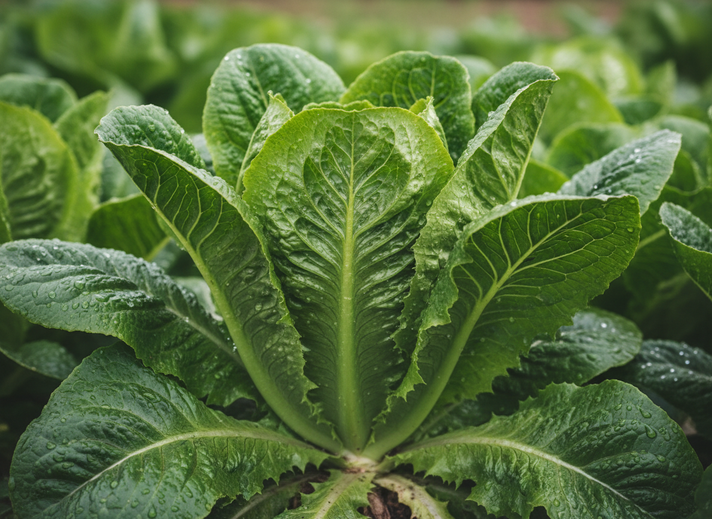

 그림1. 본인이 직접 재배한 농작물 실물 done_all 농작물 명칭: 상추 재배 및 생산 특성 done_all 품종상추 done_all 재배 환경: 시설재배 / 노지재배 등 유통 구조 설계 생산자(나) 로컬푸드 직매장 최종 소비자 물류 방식: 저온 유통(cold chain) 활용 여부 등 판매 정략: 상추 상품전략은 품질(조직·균일·식감)과 시장(내수·수출·직거래)에서 차별화 포인트를 정하고, 재배·유통·마케팅을 연계해 가격·소득을 높이는 방향이 핵심입니다. +1 특히 고온 리스크 관리, 품종·재배지 특화, 수출 확대, 디지털 보험·유통 연계 같은 요소가 전략 수립에 자주 언급됩니다.